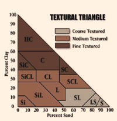

|
|
|
| Agriculturists often refer to soils as light,loamy, or heavy. Others say the soil is "coarse" or "fine". They are all referring to the texture of the soil. An important property which affects the porosity of soils. The porosity in turn determines how much moisture the soil can hold, how fast water moves through the soil and ultimately, its long term fertility. | |||

The mineral fraction of soil is made up of particles of different sizes called soil separates. Depending on the individual size of each particle it will fall into the sand, silt and clay separate. The relative proportion of each separate determines the soil texture. | |||
 The textural triangle converts the relative percentage contribution of each separate (by weight) into a textural class or name such as loam, clay, silty clay loam and so on. For example: a soil which contains 45% sand, 25% clay and 30% silt is a loam. Note that silt is determined by difference: % silt = 100% - (45% sand + 25% clay) | |||
Soil Textural Classes Sand, silt and clay size particles occur in various proportions in soils of different locations and result in different textural classes. The classes are determined by analyzing the percentages of each group. With experience, accurate estimates of texture can be made by rubbing a moist sample of soil between thumb and forefinger. This is called hand texturing. Sands feel gritty, silts feel smooth and silky, and clays feel sticky. | |||
1. Coarse-textured soils have a high sand content. They consist of large particles with uneven surfaces and because of this, have large pore spaces (but not a large % pore space! Why?). There is little contact between particles.These traits make such soils loose and easy to work; however, the large spaces do not retain water or nutrients. Water infiltrates sandy soil and percolates (moves through it) quickly and easily. As a result, sandy soils are generally dry and infertile. The dryness of sandy soil contributes to a shortage of nutrients because of less vegetative growth and, therefore, less organic matter is produced. | |||
2. Medium-textured soils known as loams, have properties in between those of coarse and fine texture. Silty loams to sandy-clay loams have a good capacity to retain water without becoming waterlogged. They are easy to work and form good clumping mixtures during cultivation. Loams contain a good supply of nutrients, necessary for the organisms living in the soil. Loam or silty soils have a texture which is most suitable for the greatest variety of living organisms. With particle sizes and spaces between those of clays and sands, they warm fairly quickly and have good water-holding capacities. The ability to hold water snow melt water and fall precipitation is especially important in areas of Saskatchewan where summers are dry. | |||
3. Fine-textured soils range from silty clay to heavy clay. Heavy clays are like soft plastic when wet and are hard when dry. This makes them difficult to work. They have a large total pore space (almost twice as much as a sandy soil), although individual pores have a small diameter and are tortuous. This type of soil can hold a lot of water, but water movements are slow due to high surface tension forces. Clays are often waterlogged and poorly aerated, as well as being cool. Clay soils absorb and release water (to plants) very slowly. Air movement within the soil is also very slow. These conditions mean that clay soils take longer to warm than coarser soils. Colder temperatures can delay seed germination. Prolonged cold temperatures can cause dormant seeds to be destroyed by microorganisms in the soil. A lot of water in the spaces can mean little air is available for living organisms to carry out cellular respiration and certain biochemical actions. The process of mineralization (conversion of organic remains into (soluble) inorganic forms which are then available for use by other living things) may be restricted in clayey soils.
|